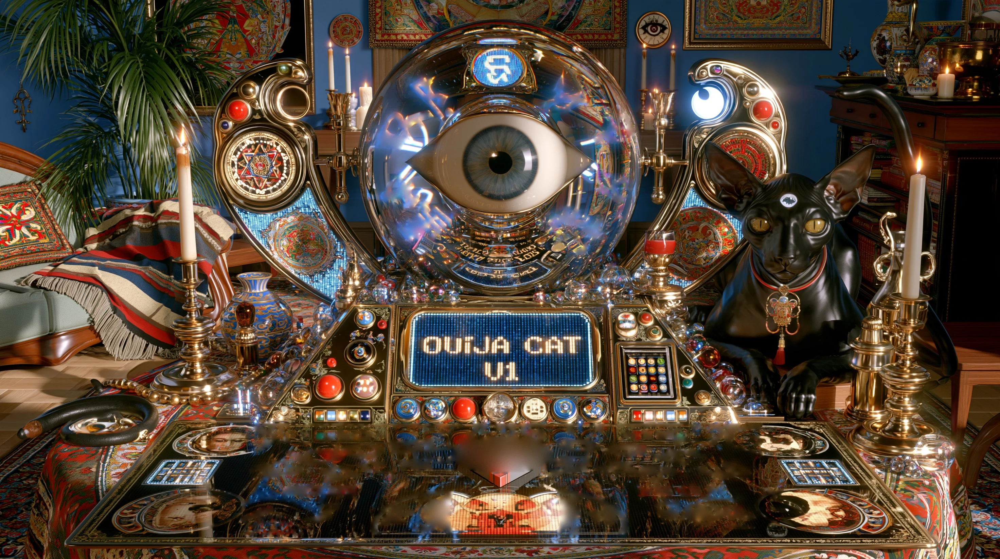

← Templum
Palm
The Engine
The Crystal
Growing glass
Transcript
Full screen
Turn your phone sideways. He doesn’t fit upright.
OK

The scribe · say what you see
Speak
Tell it once more, as the adventure it became
Goodbye, glass
You do the seeing. The glass listens and keeps the old code.